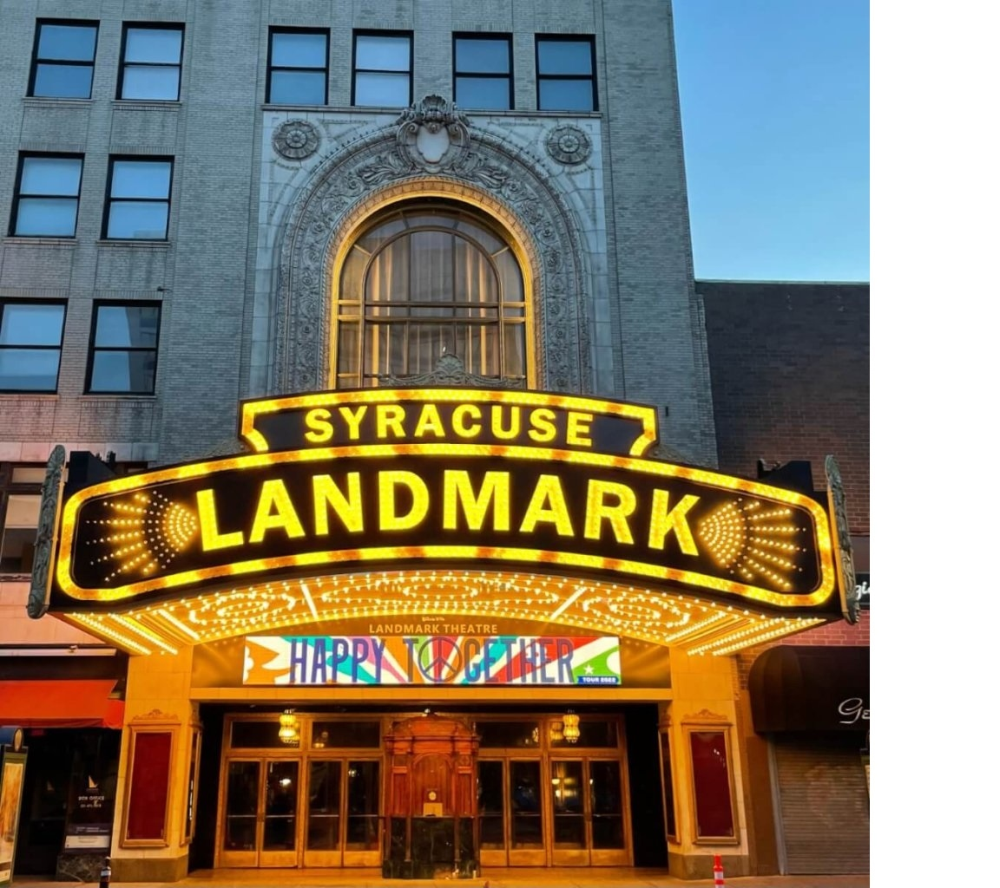
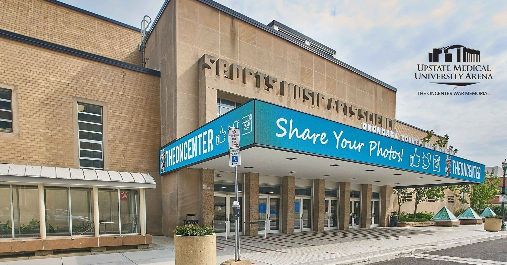
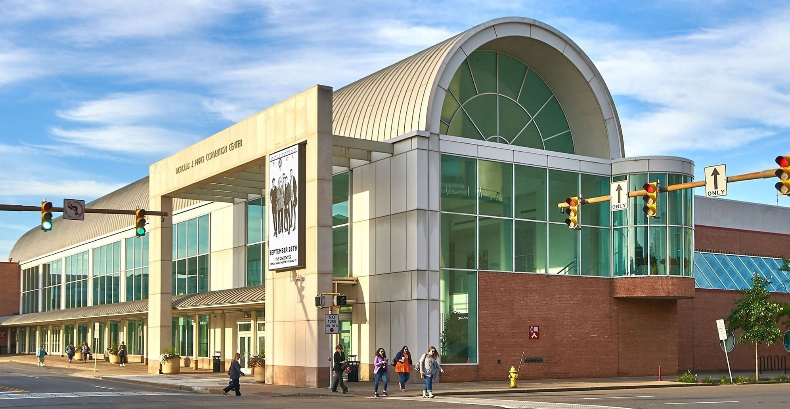
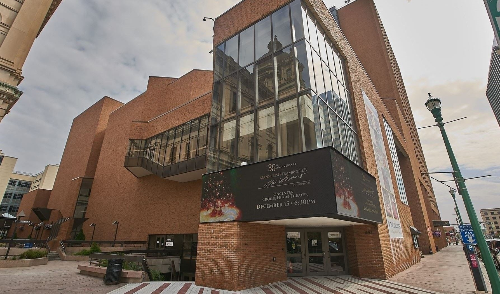

Destiny USA
The largest shopping, dining, and entertainment destination in New York State — formerly the Carousel Center.

The Local Area
Set right off I‑90, the Syracuse Grand puts Central New York's biggest attractions, venues, campuses, and employers within an easy drive. Here's what's close by.
The largest shopping, dining, and entertainment destination in New York State — formerly the Carousel Center.

Game days, graduations, parents weekends, campus visits — and home of the JMA Wireless Dome.

Home to The Great New York State Fair every August and concerts and events year‑round.

An open-air concert venue on the shores of Onondaga Lake — major touring acts all summer.

A meticulously restored 1928 movie palace hosting Broadway tours, concerts, and comedy.

The Oncenter War Memorial Arena — home of the Syracuse Crunch and a regular concert stop.

Central New York's largest convention venue, hosting expos, weddings, and trade shows.

Symphony, opera, and ballet performances at the heart of downtown Syracuse.

Home to elephants, primates, penguins and more — a great half-day for traveling families.
A scenic loop trail along the lake — ideal for a morning walk, run, or bike ride.

Restaurants, breweries, galleries, and live music in the city's most walkable neighborhood.

The future home of one of the largest semiconductor fabs in the United States — a quick drive north.
Drive times from the hotel
~4 miles · 7 minutes
~5 miles · 10 minutes
~7 miles · 12 minutes
~7 miles · 15 minutes
~7 miles · 15 minutes
Seconds away · less than 1 mile